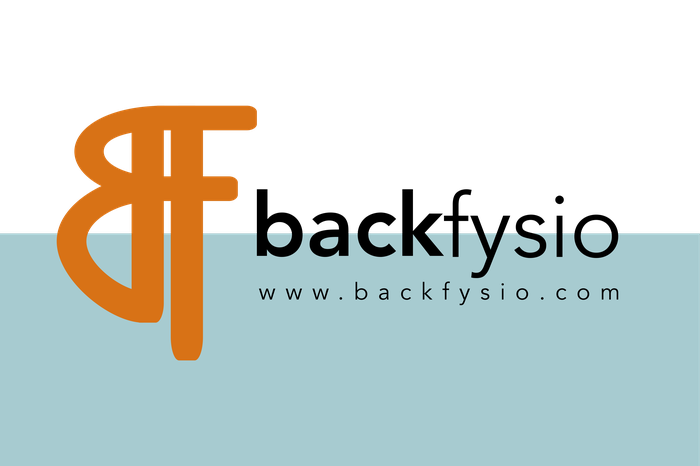
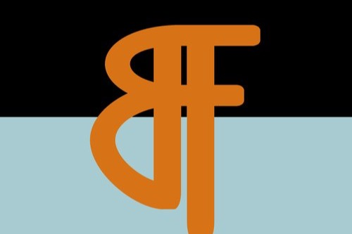

Nieuws
Explain Pain
Verdiepingscursus bij Incitus over chronische pijnklachten: pijnclassificaties, neurofysiologische verklaringsmodellen en educatieve, gedragsmatige interventies. Dit inzicht in hoe een overprikkeld zenuwstelsel pijn in stand houdt sluit naadloos aan bij mijn werkwijze binnen de Watson Headache Methode voor chronische hoofdpijn en migraine, en verdiept mijn onderbouwing richting patiënten.
Basiscursus Kaak en Hoofdpijn
Cursus bij NIVS over de samenhang tussen kaak-, nek- en hoofdpijnklachten, met een gedegen basis in het onderzoeken en behandelen van temporomandibulaire klachten (TMD) en de bijbehorende hoofdpijn. Precies de combinatie waar veel van mijn hoofdpijnpatiënten baat bij hebben, naast de Watson Headache Methode en Dry Needling.
Ademhaling in de Praktijk
Cursus bij The Health Fundament over het herkennen van dysfunctionele ademhaling en bijpassende ademhalingsinterventies. Een verstoord ademhalingspatroon belast vaak dezelfde hulpademhalingsspieren in nek en schouders die ook een rol spelen bij hoofdpijn en nekklachten – deze kennis pas ik nu direct toe in de behandeling.
Slaapproblematiek
Cursus bij Viaperspectief over het herkennen en behandelen van slaapproblematiek. Slechte slaap en pijnklachten beïnvloeden elkaar wederzijds, en juist bij hoofdpijn en migraine is een verstoord slaapritme vaak een directe trigger – iets waar ik patiënten nu gerichter in kan begeleiden.

Fysio Back in business!
Ik mag weer behandelen! Volgens het RIVM mogen fysiotherapeuten met inachtneming van de veiligheidsmaatregelen weer beginnen…

BackFysio is online!
Yes! Vanaf vandaag kunt u langskomen op de Schinkelstraat 26 voor uw fysiotherapeutische behandelingen! Om te beginnen ben ik op maandag…